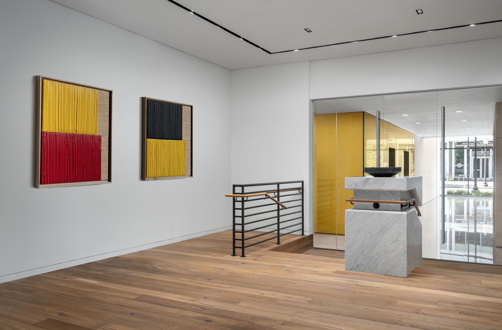

The Waycroft stands as a landmark residential development in Arlington's vibrant Ballston neighborhood, seamlessly integrating luxury living with urban convenience. The building's interior design reflects the energy of its urban context while creating intimate, refined spaces for residents.
The lobby and amenity spaces feature a sophisticated material palette of natural stone, warm woods, and polished metals, establishing an immediate sense of arrival and belonging for residents and guests alike.

